一辆敞篷车的地板锈穿后，视频先拆顶篷换密封条止水，再拆座椅、划线切除坏金属，最后用 0.6mm 薄板对接焊补并封漆。下面按可照做的顺序整理：先决定怎么切、怎么焊，再动手。
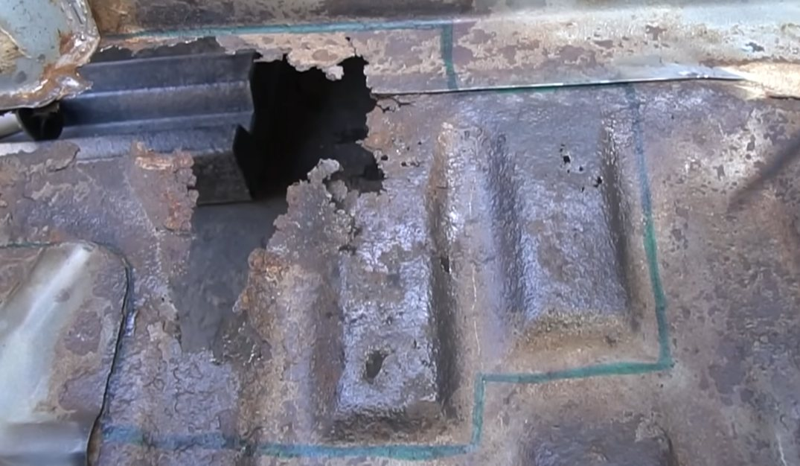
适合谁：车底或地板出现小面积锈穿、愿意先查进水原因、能用电钻和角磨机、并且肯在废料上练焊的人。视频的处理顺序是：止漏 → 拆内饰 → 切锈 → 配板 → 焊补与封漆00:02:30。
不适合谁：没找到漏水点就想直接焊的人；只想快速盖住破洞、不接受反复试装的人。视频说对接焊「是最好的焊法，但最花时间」00:14:5100:14:59。
视频里没说：整项 repairs 的总工时和总花费。只说了整块板分段焊约 30 分钟00:27:37，以及两种焊机的大致价格00:18:0400:18:42。
按视频的工具清单准备：焊机、带钢丝轮的角磨机、电钻、钣金剪（sheet metal nibbler）、12mm 套筒和防锈漆00:00:5500:01:1700:01:1900:01:29。视频说「工具其实不多」，难的是切割那一步00:01:0600:01:07。
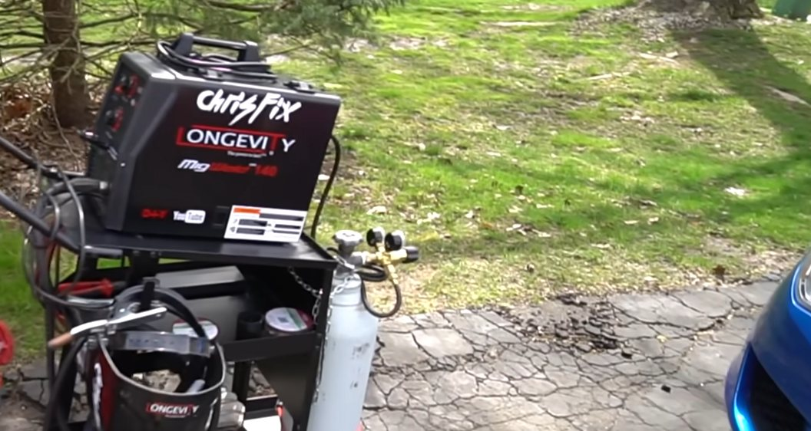
铁皮有三条路：找拆车件或同款旧车件00:01:37；买厚度相近的板材自己下料00:01:45；破洞太大或整块地板都烂了，就按年份车型找售后地板件00:01:5500:02:01。视频没给具体板材牌号或采购链接。
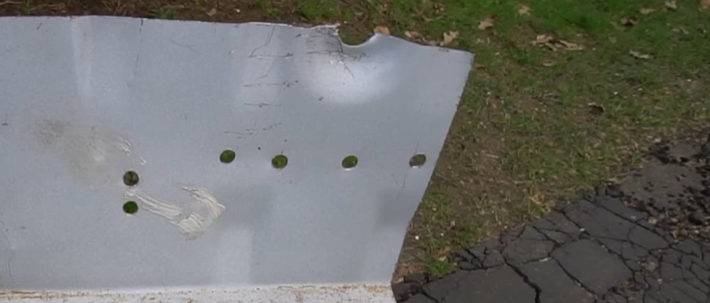
防护别省：护目镜加 N95 口罩是底线00:05:54；作者更推荐全脸面罩配 P100 滤芯，说它能过滤 99.97% 的粉尘00:06:0700:06:24。车内打磨时用 6 英寸 软管接风机做负压排尘00:06:4500:06:53。
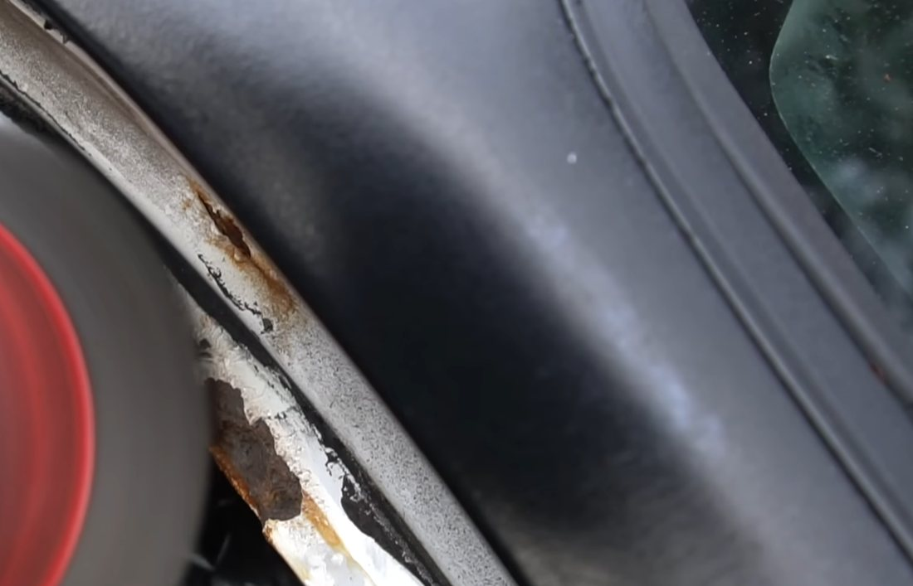
| 要决定的事 | 视频里的说法 | 照着做 |
|---|---|---|
| 对接焊还是搭接焊 | 对接焊让两块金属边缘贴合、无接缝，作者说最不易再生锈，但最费时00:14:4300:14:5100:14:59 | 地板和翼子板优先对接；愿意多花时间反复试装 |
| 什么情况下搭接 | 搭接是上下叠放再焊四边，快且简单，但两层之间可能进水生锈、表面不平整00:15:0800:15:2000:15:37 | 视频承认原厂也用搭接，但要多涂漆和密封胶00:15:51；作者示范的是对接 |
| 药芯焊机能用吗 | 约 100 美元、不用气瓶00:18:04；最细焊丝 0.030 英寸，只能焊到 22 gauge / 0.8mm00:18:2200:18:26 | 视频里的 0.6mm 板比它适用的更薄，作者不推荐00:18:33 |
| 选气保 MIG | 约 200 美元、需要气瓶，可调电压和送丝，能配 0.025 英寸 焊丝00:18:4200:18:55 | 用 25% CO₂ + 75% 氩气00:20:01，流量调到 10 L/min（约 20 CFH）00:20:22 |
| 焊前清理范围 | 接缝两侧约 0.5–1 英寸 磨到裸金属00:17:00 | 密封胶、漆、镀锌层、锈和底涂都要避开焊缝00:16:2100:16:27 |
| 焊后要不要密封胶 | 对接焊后不必再打密封胶00:32:58 | 两面都涂防锈漆，把焊缝封住00:33:12 |
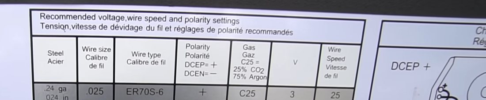
动手切之前，先弄清锈是怎么来的。作者说多数情况是水进去后积着，时间久了就锈00:02:37；他这辆敞篷车的水来自密封条，画面里能看到前一天下雨后往下渗水00:02:4500:02:49。
拆下顶篷才能碰到密封条，它由两颗十字螺丝固定00:03:01。视频说有些车会用胶粘，多数只是压在凸缘上，能直接剥下来00:03:13。
装新条之前，先处理沿途的锈：用钢丝轮磨到露出亮金属、不留一点锈00:03:3200:03:36，再喷专用防锈漆并等干00:03:43。最后把新密封条压回凸缘、拧紧两颗螺丝00:04:0300:04:17。
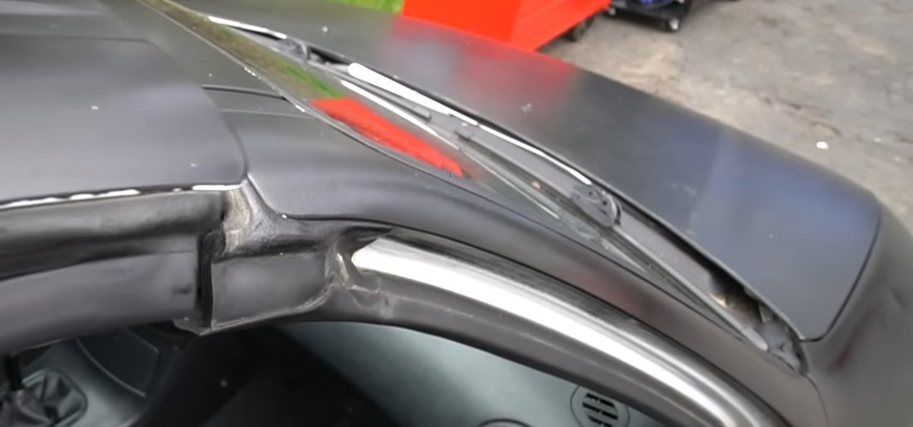
先拆两颗 12mm 前螺栓00:04:42，把座椅往前滑，再拆后两颗螺栓和安全带螺栓00:04:46。取出座椅后拿掉脚垫，门坎饰板直接撬出00:04:5500:05:00。
地毯从后储物箱下面抽出来，再让开中央扶手00:05:0200:05:08。视频用弹力绳把地毯绑到方向盘上，防止切割或焊接时掉下来挡事、甚至着火00:05:1300:05:17。
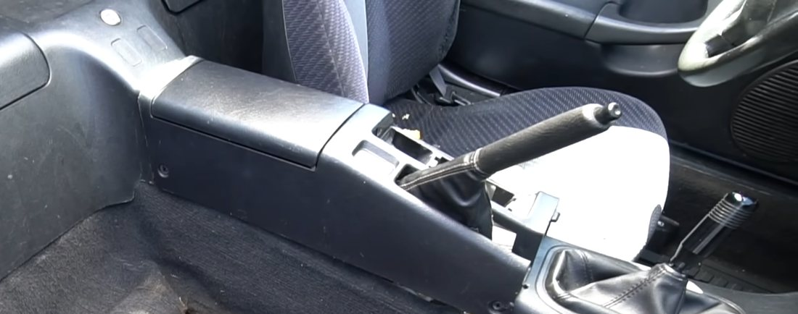
别只磨洞边。视频强调整块地板都要用钢丝轮扫一遍，因为可能藏着别的锈00:07:2000:07:25；焊缝附近的原厂密封胶要用一字螺丝刀或刮刀铲掉，才能看到下面有没有烂00:07:3500:07:44。
车底也要处理：把底涂磨掉，范围要比锈洞多出几英寸，因为锈会沿着底涂下面爬00:08:2200:08:28。视频里正面看着还好的地方，从车底能看到已经穿孔00:08:44。
划线时把锈全部圈进去，外沿留一圈好金属来焊00:09:12。作者用「能不能一戳就穿」判断好坏：一处还结实，另一处一戳就破00:09:3000:09:37；只有表面锈的金属可以保留并直接焊00:09:42。
切割工具他选钣金剪，靠电钻带动，一点一点冲剪，能任意方向走线00:10:0000:10:0700:10:13；视频说从车底操作更好施展00:10:44。边缘不齐先用锉刀修，这个阶段不必追求完美00:10:57。
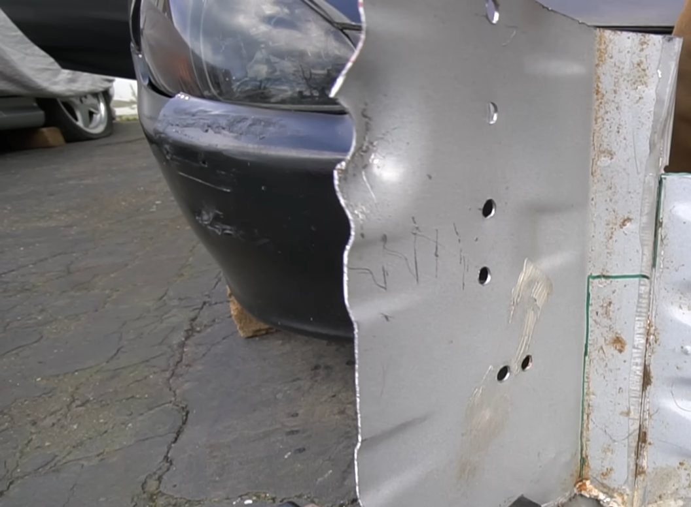
把新板裁成和洞一样的形状。第一刀先粗剪，宁可稍大，后面还能再修00:11:3800:12:02；描线后下刀要留一点余量，因为「金属切掉容易，加回来难」00:12:4600:12:51。
在新板上画跨过边缘的参考线，对齐旧板后再切，这样每次都能放回同一位置00:13:0100:13:06。反复「小修 → 试装」00:13:30；只剩薄薄一层要去掉时改用锉刀，别再用剪00:14:14。
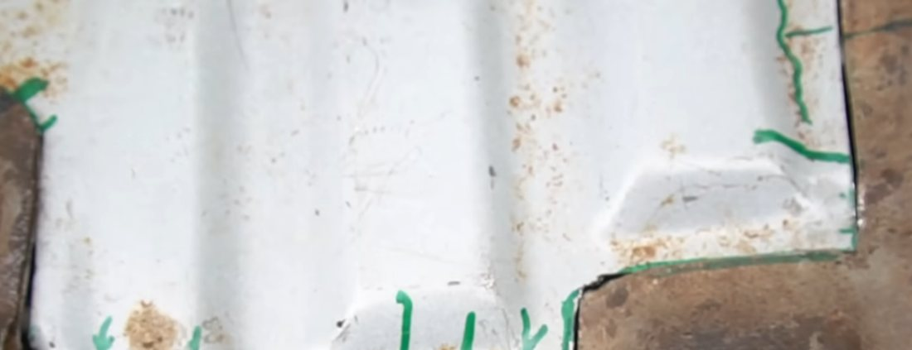
接缝不必毫无瑕疵。视频承认试装后仍可能留下小孔，说焊接时可以处理00:13:5100:14:28；目标是整圈尽量贴合00:13:58。
先清洁。接缝两侧磨到裸金属，可以只磨要焊的地方，不必整片重磨00:16:52；两面都要处理，每侧约 0.5–1 英寸00:17:0000:17:12。最后用异丙醇或丙酮擦掉油和脏东西00:17:24。
再定参数。用数显卡尺量板厚，视频里约 0.6mm00:19:2000:19:33；参数表给的起始值是 3V、送丝 2500:19:42。焊丝伸出喷嘴一点点即可00:20:59。
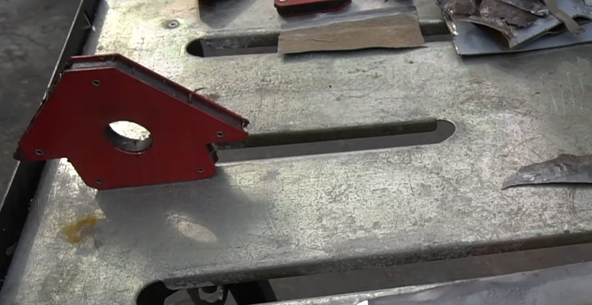
试焊不能跳。戴好焊接面罩和手套、旁边放灭火器00:21:18，在切下的废料上试。送丝 35 仍有明显问题，升到 45 后声音像「煎培根」，不再烧穿00:21:2600:21:3300:21:43。合格标准是焊透但不烧穿00:21:5900:22:05。
上车前先断电。拆掉电瓶负极线，防止电流伤到电脑和传感器00:22:1200:22:19；铺防火毯、保持通风00:22:29；地线夹要夹在焊接处附近的干净金属或螺栓上，视频用了安全带固定点00:22:4200:22:56。
点焊固定。每个点焊约一秒，把两块板先连起来，沿四周布几个点00:23:0400:23:13。不齐的地方用上下两把锤子配合找平00:23:38。
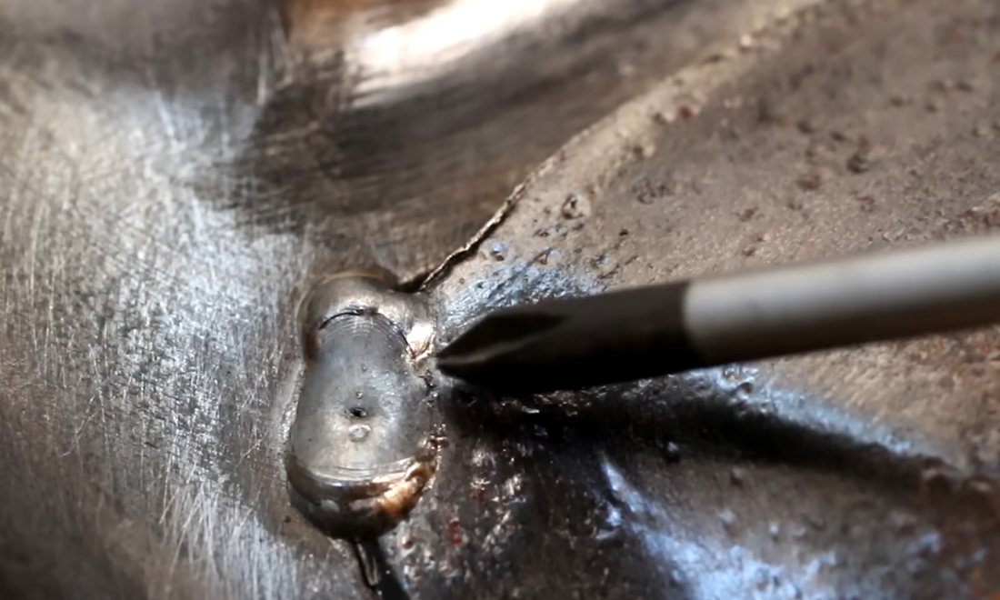
分段焊，别一口气拉长弧。连续焊会让薄板变形、烧穿，所以从一个点到另一个点，再跳到对面，把热量散开00:24:1200:24:1700:24:36。每次加丝约一秒，等熔池从亮橙变成暗橙再焊下一点00:25:2700:25:1800:25:21；发现烧穿就停下来冷却约 15–20 秒00:26:2000:26:51。
有缝隙就垫散热片。把压扁的铜管、铜片或铝片垫在缝下，用千斤顶或磁铁顶住；金属不粘焊，还能吸走多余热量00:28:1400:28:3200:29:24。
验漏别靠肉眼。夜里从车底往上看有没有漏光，或用开孔的盒子罩住强光手电，白天也能找出针孔00:29:4600:29:53。视频用这招发现了两个小孔并补上00:30:13。
最后封漆。用 80 目 砂纸打磨00:31:08，吸净灰尘并用酒精擦拭00:31:1700:31:23；漆倒进小杯里用，别直接从罐里蘸00:31:34。第一层薄涂，4 小时后第二层00:32:23，24 小时后检查00:32:34。视频说这种漆能隔绝对金属的空气和水分00:32:47；对接焊不必再打密封胶00:32:58，但要两面都涂00:33:12，并把原厂孔装回橡胶圈00:33:14。
| 坑 | 怎么避 |
|---|---|
| 不查漏源直接焊 | 先找为什么会锈00:02:30；视频这辆车的进水点是密封条00:02:45 |
| 只磨洞边、不铲密封胶 | 整块地板都磨00:07:20；缝封胶要铲掉才能看清下面00:07:44 |
| 只看正面判断锈范围 | 车底底涂也要磨开几英寸00:08:22；视频里正面看着好，底下已穿孔00:08:44 |
| 切割线贴着洞画 | 绕开全部锈区，外圈留好金属00:09:12；用「一戳就穿」判断00:09:37 |
| 新板一次剪到位 | 先粗剪留余量00:12:46，画参考线多次小修00:13:01 |
| 焊前不清接缝 | 两侧 0.5–1 英寸见裸金属00:17:00，再用酒精／丙酮擦00:17:24 |
| 不断负极就上车焊 | 先拆电瓶负极00:22:12，避免电流伤电脑和传感器00:22:19 |
| 连续长焊或大缝硬焊 | 分段跳焊散热量00:24:36，大缝垫铜／铝散热片00:28:14 |
视频说这次修复「会陪这辆车用到报废」00:33:41，属于对效果的判断，本文不采信为承诺；视频开头提到想靠涡轮套件把马力翻倍00:00:34，与锈洞修复无关，也不作为施工依据。视频还演示用压缩空气罐置换漆罐里的氧气以延长保存00:31:5700:32:08，涉及化学品与容器处理，本文只记录视频原话，不评价安全与合规性。